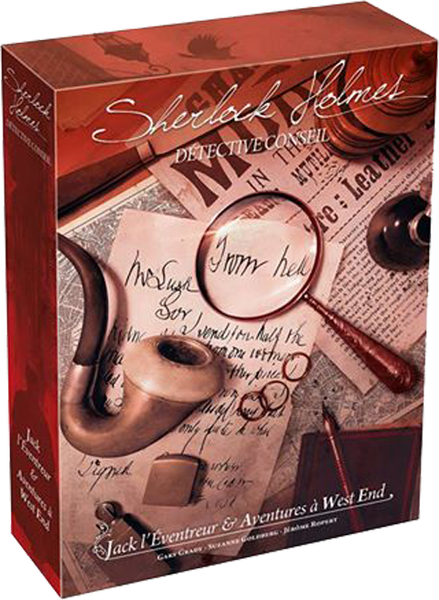

Take to the Streets
In Sherlock Holmes Consulting Detective, you are presented with a mystery to solve, and it is then up to you to trace the threads of evidence through the byways and mansions of nineteenth century London. You will interview suspects, search the newspapers for clues, and put together the facts to reach a solution. Why were two lions murdered in Hyde Park? Who is responsible for the missing paintings from the National Gallery? Who murdered Oswald Mason and why? These are just a few of the cases that will challenge your ingenuity and deductive abilities.
The Thames Murders
The gaslight streets of Victorian London. Horse-drawn broughams, hansoms, and dog-carts rattle over the cobblestone streets, pulling their passengers through the pea-soup fog. On every street corner, you pass booksellers, clubs, prisons, music halls, doctors, tea houses, and steamship companies. Yet in the shadows and dark alleys of this great city, horrible and cunning crimes are committed daily, confounding the policemen of Scotland Yard. Still, even the most ingenious crime is only a puzzle for the world's only consulting detective - Sherlock Holmes!
Carlton House

Return to the streets of Victorian London, but also venture into brand new locations in the latest installment in the Sherlock Holmes Consulting Detective line: Carlton House & Queen's Park!
Like the previously released The Thames Murders and Other Cases, Carlton House & Queen's Park introduces ten exciting cases, each one drawing players deep into the world of Sherlock Holmes. Among these cases includes two classic, long out-of-print expansions which are now revised and updated. Whether you're playing solo or with up to eight possible players, you need your wits about you to solve the cases and beat Holmes himself!
Jack the Ripper
Enter the gaslit world of Sherlock Holmes in Jack the Ripper & West End Adventures! A brand new standalone game (you don't need another box in order to play this one) in the Sherlock Holmes Consulting Detective series of games, Jack the Ripper & West End Adventures will throw ten entirely new cases cases your way.
Six of these cases are one-off adventures, while four others form a linked campaign that challenges you to stop the murders of the notorious Jack the Ripper! With a new map of Whitechapel, newspapers hot-off-the-press for every case, and ten unique casebooks, it's time to put your mind to the test!